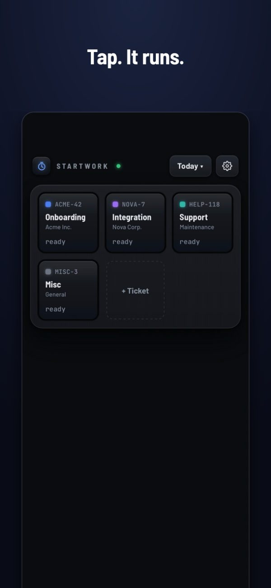
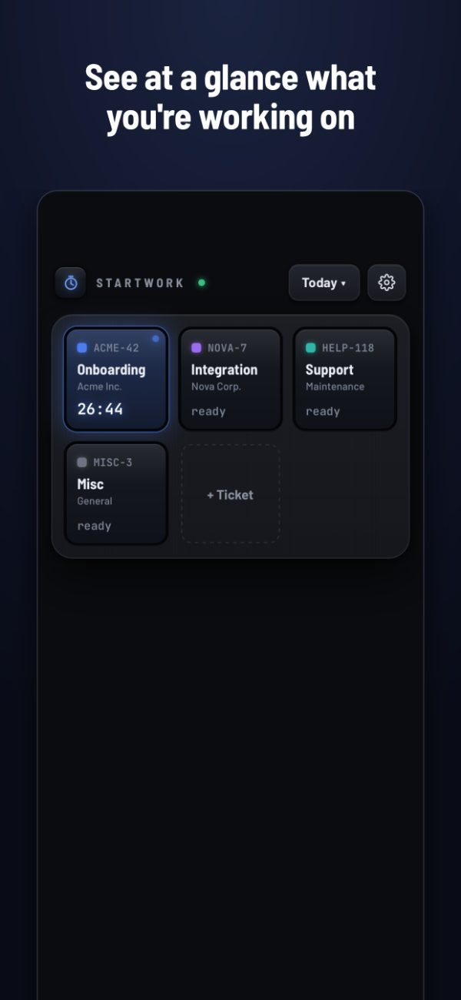
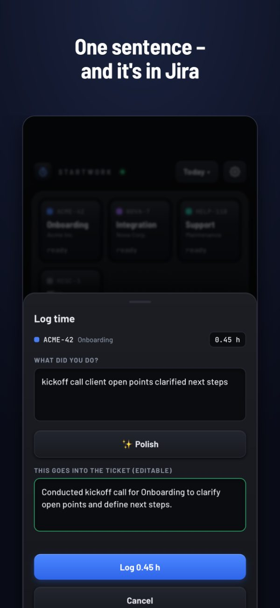
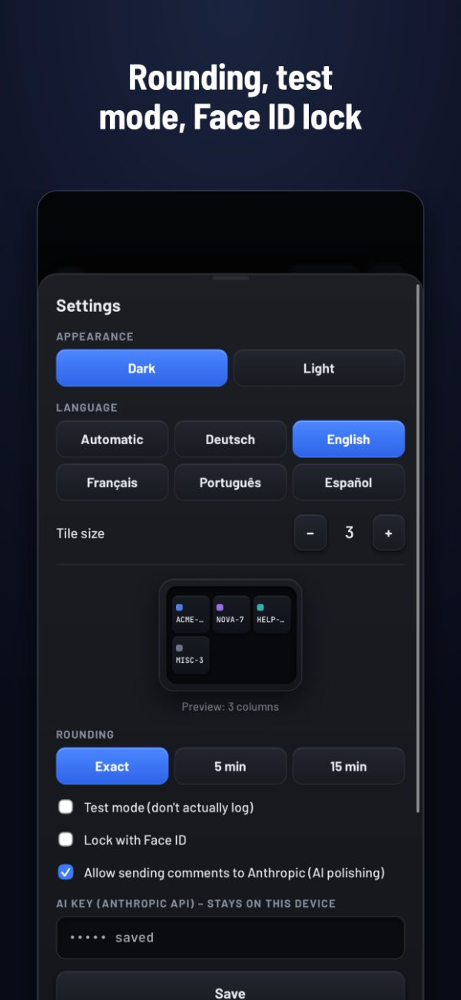

StartWork
Log Jira time without drama
Tap a tile – the clock runs. Tap again, describe what you did in one sentence – it’s in Jira. No account, no cloud, nothing to get approved.
One-time purchase · no subscription · iPhone




No account, no cloud
StartWork runs on your iPhone. There is no server of ours and no sign-up. Your time goes straight to your own Jira – nowhere else.
Pay once
One purchase. No subscription, no ads, no data collection, no follow-up costs.
Built for people who bill by the hour
Consultants, freelancers and agencies: log time the moment you switch tasks, not from memory on Friday.
What it does
- Tiles for your regular tickets, title fetched from Jira
- Add tickets by key or by pasting a Jira link
- Rounding to 5 or 15 minutes, if your company wants it
- Test mode: see what would be logged before logging for real
- Notification while a timer runs, so you don’t forget it
- Face ID lock – a Jira token lives on the device
- Daily report to share, plus previous days for the stand-up
- Optional: polish comments for the client with AI, using your own Anthropic key and only after explicit consent
Before you buy
StartWork needs a Jira instance you can sign in to with your own token. Jira Cloud, Server and Data Center are supported.
Time is logged as a standard Jira worklog. If your company uses Tempo with required fields (“Work Attributes”), those fields stay empty.
Questions
How do I log time in Jira from my iPhone?
Install StartWork, enter your Jira address and an API token once, and add your tickets as tiles. Tap a tile to start the clock, tap again to stop, write one sentence – StartWork logs it as a worklog on that ticket.
Does it work with Tempo?
Yes. StartWork writes standard Jira worklogs, which Tempo reads. Required Tempo fields (“Work Attributes”) are not filled in.
Which Jira versions are supported?
Jira Cloud (sign-in with email and API token) as well as Jira Server and Data Center (personal access token).
What happens to my data?
It stays on your iPhone and goes only to your own Jira. No analytics, no tracking, no account with us.
Is it a subscription?
No. You pay once in the App Store.